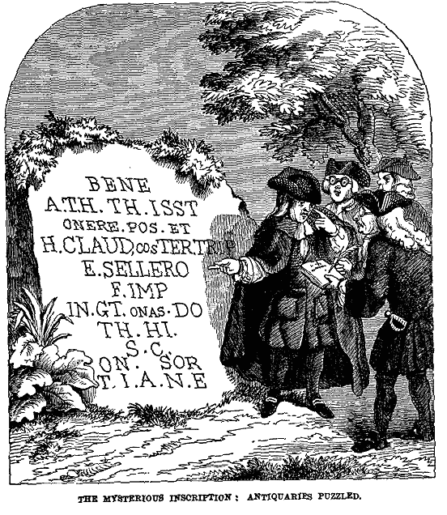

Monday, December the 13th, 2004
back to: title, date or indexes

What on earth does the mysterious inscription mean? Why are the antiquaries puzzled? Unlike in this Age of Wretchedness, where nobody learns Latin anymore, it cannot be that the language perplexed them. All those abbreviations, perhaps? I shall reveal the answer tomorrow.
This is reprinted as a way of drawing your attention to the University of Wisconsin-Madison's superb online edition* of Chambers' Book Of Days (1869), where the picture—and the solution—appear under today's date. A brand new edition of the Book Of Days has just been published, apparently, but in place of Chambers' original heteroclite jumble of learning, anecdote and dusty scholarship, the reader is treated to anniversaries of television shows and such important dates as, I suspect, Kylie's birthday. Excuse me while I wail, gnash my teeth and rend my garments.
*NOTE : The Greater Emmitsburg Historical Society of Maryland has a Hyperlinked & Searchable edition of the 1869 book online.